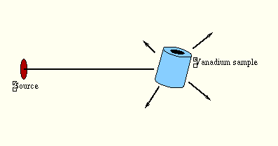
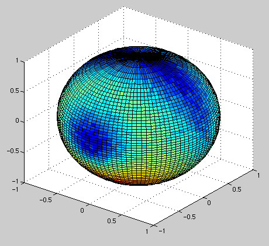
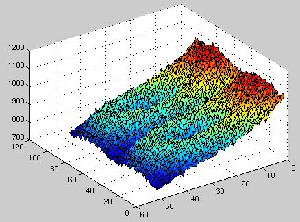

V_sample
component. The instrument setup consists of the source aimed at the vanadium sample, with a
4PI PSD monitor and a flat PSD monitor.

See also the source code for the instrument definition.A point-sized spherical vanadium sample would scatter the neutron beam uniformly in all directions. However, the non-vanishing dimensions and hollow-cylinder geometry of the sample creates an interesting structure in the scatering as measured by the 4PI PSD. This is a plot of the detected results:

This is a flattening of the 4PI PSD detector using cylinder projection.
